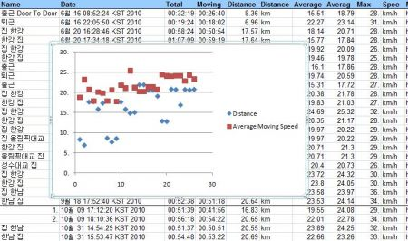
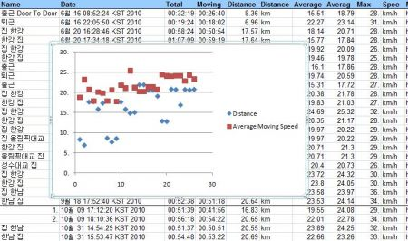

자전거
10/31/2010
산다 산다 마음만 가지고 있던 자전거 펌프를 오늘 질렀다.
계속 앞 바퀴에 바람이 부족한 것 같아 자전거를 탈 때 마다 뭔가 부족했는데,
권장 psi 까지 빠방하게 넣고 라이딩 했더니
오오 달라.
굳이 비교하자면, 이전 라이딩이 물렁한 서스의 국산차였다면
오늘은 단단한 서스로 바닥을 느낄 수 있었다고나 할까.
계속 앞 바퀴에 바람이 부족한 것 같아 자전거를 탈 때 마다 뭔가 부족했는데,
권장 psi 까지 빠방하게 넣고 라이딩 했더니
오오 달라.
굳이 비교하자면, 이전 라이딩이 물렁한 서스의 국산차였다면
오늘은 단단한 서스로 바닥을 느낄 수 있었다고나 할까.
그 동안 이놈의 시스템 경고 문자 때문에 자전거 타면서도 마음이 편하지 않았는데,
오늘 2시간 라이딩 동안 하나의 경고 문자도 없었다.
확실히 꾸준히 죽어라고 하면 처음에는 될 것 같지 않은 일도 결국은 좋은 날이 오는구나.
오늘 2시간 라이딩 동안 하나의 경고 문자도 없었다.
확실히 꾸준히 죽어라고 하면 처음에는 될 것 같지 않은 일도 결국은 좋은 날이 오는구나.
지금까지 라이딩 결과에 대한 추세선을 그려 봤다.

시퍼런 distance 가 꾸준히 늘어 요즘은 20km 를 왕복하고,
시뻘건 평속 역시 distance 가 느는데도 불구하고 25km/h 에 약간 못 미치는 형국이구만.

시퍼런 distance 가 꾸준히 늘어 요즘은 20km 를 왕복하고,
시뻘건 평속 역시 distance 가 느는데도 불구하고 25km/h 에 약간 못 미치는 형국이구만.